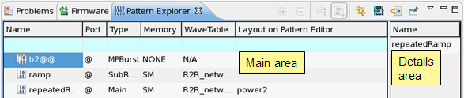

Viewing and editing bursts in the Pattern Explorer
Burst patterns (or bursts) are a pattern type. They consist of call instructions to main patterns, which are executed in series without any break. A burst uses always the default port (@).
About this task
Within the Pattern Explorer (and the respective editors) you can create, view and edit bursts. Burst patterns (bursts) use always the default port (@), other than port bursts.
Before you begin
- The Pattern Explorer must be open, see Opening the Pattern Explorer.
- The burst you want to view or edit must be available. If you need to create a burst, right-click, select and choose Burst as Pattern Type. For details see Creating a pattern.
- For how to create and edit a port burst (Type = PortBurst) or multiport burst (Type = MPBurst) see Multiport Burst Editor.
Procedures
To view the content of a burst:
In the main area of the Pattern Explorer highlight the burst. The details area of the Pattern Explorer shows the content of the burst.

To add a pattern to a burst:
- In the main area highlight the burst.
- Click the
 (Lock detailed area) icon at the right upper corner of the Pattern Explorer.
(Lock detailed area) icon at the right upper corner of the Pattern Explorer. - In the main area, highlight the pattern you want to add to your burst, right-click it and select Copy.
- In the details area, right-click and select one of the following:
- Insert, if you want to add a new line containing the copied pattern.
- Paste, if you want to overwrite an existing line with the copied
pattern.
To change the pattern activate the content assist. In the details area double-click the name field and press Backspace, then press Ctrl+Spacebar. A list box appears, which contains all patterns. In the list box select the pattern and press Enter two times.
To change the pattern sequence of a burst:
In the details area highlight the line you want to shift, right-click and select Up or Down.
To delete a pattern from the burst:
In the details area highlight the line you want to delete, right-click and select Delete.
To open a referenced pattern:
- In the Pattern Explorer double-click the burst. The burst appears in the Pattern Editor. All referenced patterns are listed in the Instruction column as CALL pattern_name.
- In the Pattern Editor you may optionally
- select the CALL instruction and press F3.
- right-click the CALL instruction and select Open Referenced Pattern.
- only in expanded mode: select the CALL instruction then, on the status line, double-click
the pattern entry.
The referenced pattern opens in the Pattern Editor.
Functional changes
- Introduced before SmarTest 6.3.2
- SmarTest 6.5.3: Double-click and right-click burst opens referenced patterns
- SmarTest 7.1.3: Referenced pattern of burst is shown on status line